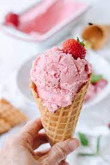
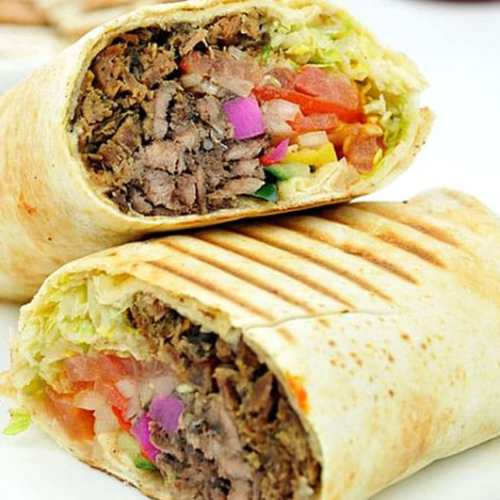
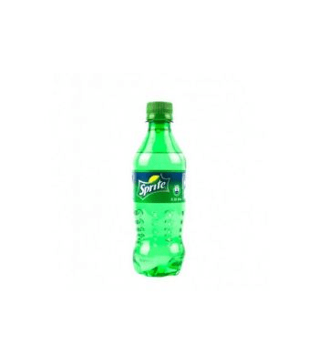
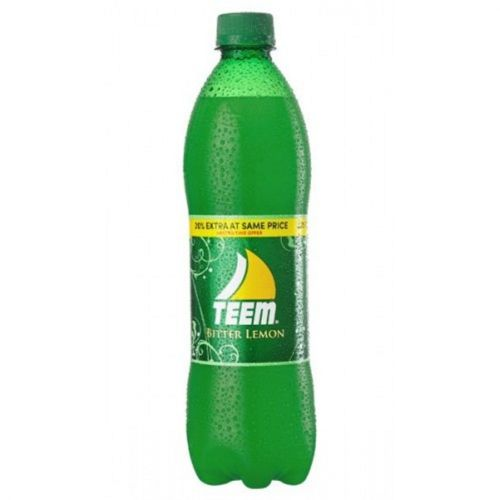

A butter cake is a cake in which one of the main ingredients is butter. Butter cake is baked with
basic ingredients:
butter, sugar, eggs, flour, and leavening agents such as baking powder or baking soda. It is
considered as one of the
quintessential cakes in American baking.
One quantity is a single slice.
₦300
Biscuit Cake
Biscuit cake is a type of no bake tea cake, similar to American icebox cake, found in Irish,
English, Danish, Arabic
and Jewish cuisine. It is made with digestive biscuits and is optionally prepared with a
chocolate glaze.
In the
tasting, strawberry flavor veered wildly from nonexistent (most) to bubble-gum-sweet to full and
bright (very few).
The
dairy background was sometimes round and creamy, often overly tart and icy — probably because of
the presence of
strawberry juice in the mixture.
One quantity is a single slice.
₦300

Strawberry Ice Cream
One important benefit of strawberry ice cream is that it provides energy, Ice cream is rich in
proteins, carbohydrates,
and fats which when broken down in the body produces energy. Our bodies need all these nutrients
to provide energy.
Since ice cream is sugary, it is crucial to be taken in moderation to prevent weight gain among
other undesired gains.
One quantity is a single cup.
₦500
Vanilla
Vanilla has long been the best-selling ice cream flavor not only
because it is creamy and delicious, but also because of
its ability to enhance so many other desserts and treats,” said Cary Frye, IDFA vice president
of regulatory and
scientific affairs and nationally respected expert on ice cream and frozen desserts.
One quantity is a single cup.
₦500
Cholcolate Ice Cream
What are the benefits of chocolate ice cream?
Health Benefits of Ice Cream
It Is Loaded With Vitamins and Minerals. ...
It Gives You Energy. ...
It Helps Boost Your Immunity. ...
It Helps in Stimulating Your Brain. ...
It Helps in Strengthening Your Bones. ...
It Makes You Happier. ...
It Increases Your Libido. ...
It Prevents Breast Cancer.
One quantity is a single cup.
₦500
Chicken Shawarma
Shawarma is a Levantine Arab dish consisting of meat cut into thin
slices, stacked in
a cone-like shape, and roasted on a slowly-turning vertical rotisserie or spit. Originally made
with lamb, mutton or
chicken, today's shawarma may also be turkey, beef, or veal. Thin slices are shaved off the
cooked surface as
it continuously rotates. Shawarma is one of the world's most popular street foods, especially in
Turkey, Egypt,
Russia, and Pakistan, as well as the countries of Central Asia, the Levant, Arabian Peninsula,
and beyond. Shawarma is
prepared from thin cuts of seasoned marinated lamb, mutton, veal, beef, chicken, or turkey.
One quantity is a single wrap.
₦1000
Meat Pie
A meat pie is a pie with a chunky filling of meat and often other
savory ingredients. They are popular in Australia and
New Zealand, Canada, Europe and the United Kingdom, Ghana, Nigeria, South Africa, and Zimbabwe.
As with most pies, the pasty is usually baked, fried, or deep fried at a high enough temperature
to induce the Maillard
reaction, which changes the colour of the pastry to a golden or brown colour, and greatly
increases the pastry's
richness and flavour. Depending on how the pastry is prepared, when cooked the pastry might also
acquire a tender, flaky
structure.
It depends upon the talent of the chef to achieve the desired pastry effect while also cooking
the internal filling to
achieve food safety at a desired service temperature; meat pies are often served hot, sometimes
far too hot to quickly
consume. Tender cuts of meat tend to become tough at higher temperatures, whereas tough cuts of
meat with more
connective tissue can become more tender at higher temperatures, so the cooking strategy will
often vary depending on
the filling contents. In some cases, it may be necessary to partially precook either the filling
or the crust to obtain
the desired balance of effects in the final pie.
One quantity is a single pie.
₦300

Goat Shawarma
Shawarma is a Levantine Arab[4] dish consisting of meat cut into
thin slices, stacked in
a cone-like shape, and roasted on a slowly-turning vertical rotisserie or spit. Originally made
with lamb, mutton or
chicken, today's shawarma may also be turkey, beef, or veal. Thin slices are shaved off the
cooked surface as
it continuously rotates. Shawarma is one of the world's most popular street foods, especially in
Turkey, Egypt,
Russia, and Pakistan, as well as the countries of Central Asia, the Levant, Arabian Peninsula,
and beyond. Shawarma is
prepared from thin cuts of seasoned marinated lamb, mutton, veal, beef, chicken, or turkey.
One quantity is a single wrap.
₦1000
Fish Shawarma
Shawarma is a Levantine Arab dish consisting of meat cut into thin
slices, stacked in
a cone-like shape, and roasted on a slowly-turning vertical rotisserie or spit. Originally made
with lamb, mutton or
chicken, today's shawarma may also be turkey, beef, or veal. Thin slices are shaved off the
cooked surface as
it continuously rotates. Shawarma is one of the world's most popular street foods, especially in
Turkey, Egypt,
Russia, and Pakistan, as well as the countries of Central Asia, the Levant, Arabian Peninsula,
and beyond. Shawarma is
prepared from thin cuts of seasoned marinated lamb, mutton, veal, beef, chicken, or turkey.
One quantity is a single wrap.
₦1000

Sprite
Sprite doesn't contain caffeine, it may provide a boost of energy
and exert effects similar to those of caffeine when
drunk in excess. Sprite is a clear, lemon-lime soda that doesn't contain caffeine but is high in
added sugar. Thus,
similarly to caffeine, it may provide a jolt of energy. Sprite is a colorless, lemon and
lime-flavored soft drink
created by The Coca-Cola Company. It was first developed in West Germany in 1959 as Fanta Klare
Zitrone ("Clear Lemon
Fanta") and was introduced in the United States under the current brand name Sprite in 1961 as a
competitor to 7 Up.
Sprite comes in multiple flavours, including cranberry, cherry, grape, orange, and vanilla.
One quantity is a single 35cl bottle.
₦150

Teem
Teem is a lemon-lime-flavored soft drink produced by The Pepsi-Cola
Company. It was introduced in 1960 as Pepsi's answer
to 7 Up and Coca-Cola's Sprite.
Bitter Lemon is a lemon-flavored beverage similar to tonic water. ... Lemon is used as a mixer
for alcoholic beverages,
but you can also drink it on its own. ... as it is high in calories and does not provide a large
degree of nutritional
benefits. Teem is the idle drink for our old parents because of its low sugar content. Medical
researches proves it is
good for men as per it enhances sperm production